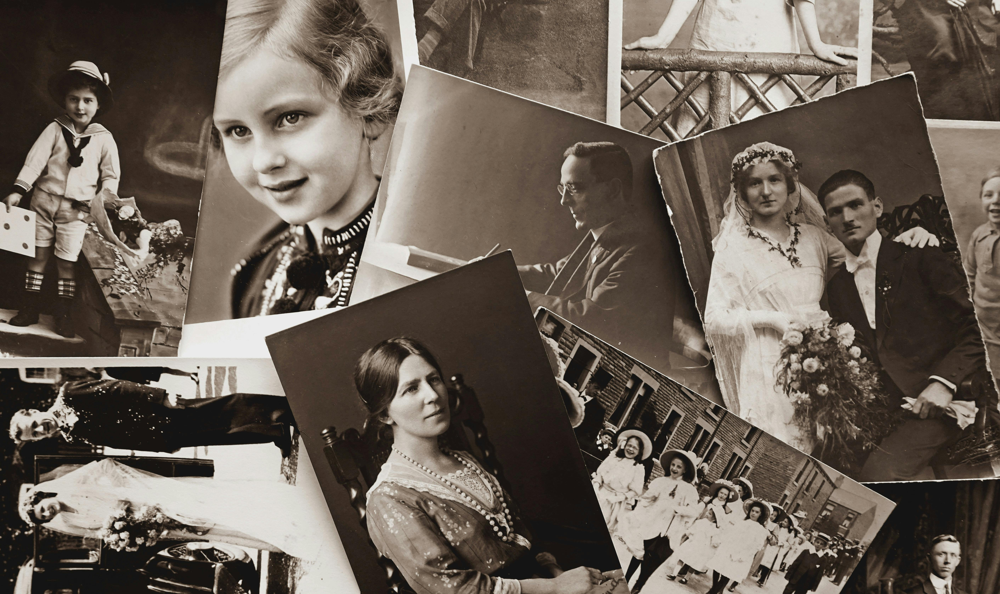

Recursos REA
Existen diversos recursos REA que pueden usarse como inspiración para crear nuestros proyectos. Por ejemplo, en San Cristóbal de La Laguna, hay una colección de una veintena de bustos representando a personajes históricos cuyas identidades y contribuciones son poco conocidas. El Centro de Documentación Canarias América (CEDOCAM) se propone desvelar la identidad de estos personajes, especialmente entre los estudiantes de Secundaria, abriendo sus recursos para facilitar la investigación. En colaboración con el profesorado, se ha desarrollado una propuesta didáctica que utiliza los recursos bibliográficos y documentales con el fin de que los alumnos descubran "¿Quién es quién?" entre los Hombres de Bronce de la ciudad, destacando así la importancia de su legado histórico, ligándose así también a nuestro proyecto, que también busca acercarnos a nuestra tradición agrícola.

Foto de Suzy Hazelwood, Pexels
Este proyecto supone una iniciativa muy acertada acercar la historia y su legado a las nuevas generaciones de forma amena y divertida, así fomentando la curiosidad del alumnado.
Autor/a(s): Ana Muñoz Pérez, Sigfrido González Díaz.
Colaborador/a(s): Jesús Hernández González, Manuel de los Reyes González Marichal.
Etapas/Áreas/Materias – Educación Física, Lengua Castellana y Literatura.
ESO. Educación Física, Lengua Castellana y Literatura
Tipo(s) de situación de aprendizaje: Caza del tesoro.
En el siguiente enlace, podéis informaros más sobre el proyecto: Hombres de bronce en la laguna